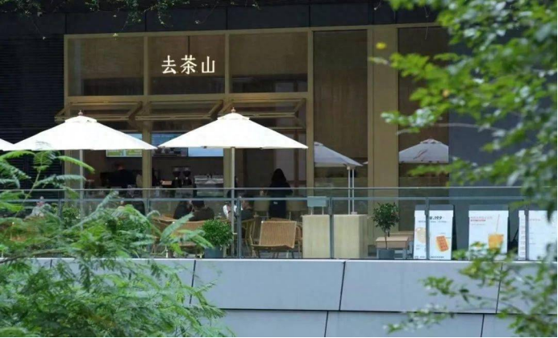

创立于贵州贵阳，以「原产万物，万物稀奇」为愿景，致力于以新式茶饮焕发贵州产地原料的新活力。
鼠标悬停在时间轴年份上查看详情
创立于贵州贵阳，以「原产万物，万物稀奇」为愿景，致力于以新式茶饮焕发贵州产地原料的新活力。

品牌开始将目光投向省外，先后在重庆、成都开设门店，开启西南市场布局。
有着20多年历史的贵州茶饮品牌「去茶山」走出西南，首拓华南市场，将深圳作为品牌拓展的第四座城市。
去茶山面向全国城市布局的第六站——上海分店正式开业，标志着品牌进入一线城市市场。

目前门店已有63家！品牌在社交媒体上受到广泛关注，成为传播贵州文化的重要窗口。
| 年份 | 品牌事件 |
|---|---|
| 2000 | 品牌创立于贵州贵阳 |
| 2008 | 走出贵州，进军西南市场 |
| 2023 | 首拓华南市场，进驻深圳 |
| 2024 | 进军上海，布局全国市场 |
| 至今 | 全国门店63家，传播贵州文化 |